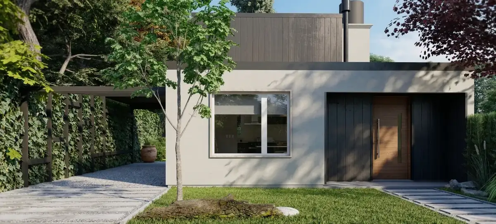
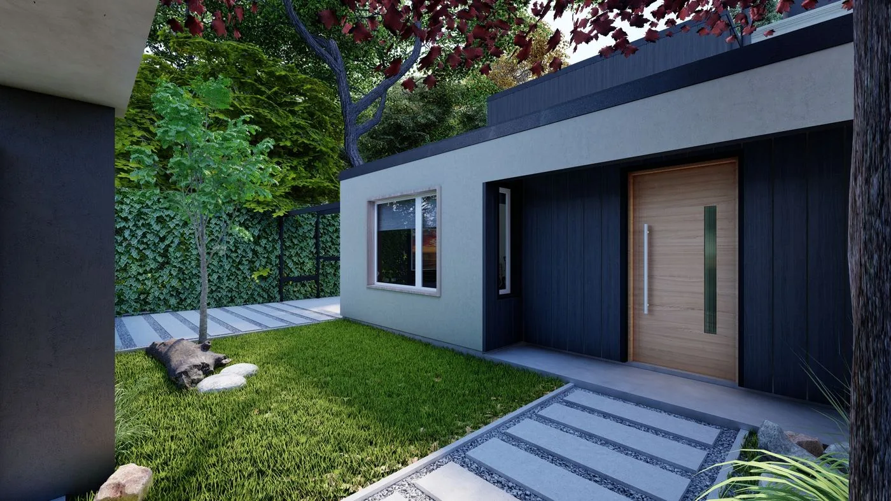
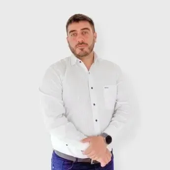

Arquitectura con método y filosofía Japandi.
Diseñamos y dirigimos tu vivienda con un proceso claro —escucha profunda, interpretación técnica y creación— apoyado en tecnología BIM y control de costos, calidad y plazos en cada etapa.

Cada obra comienza mucho antes del primer plano. Comenzamos escuchando —hábitos, emociones, presupuesto, tiempo— y terminamos entregando no solo la vivienda, sino el modelo completo para que el mantenimiento sea tan preciso como la construcción.
Ver proceso completoCaptamos las emociones, los sueños y las necesidades detrás de cada proyecto. No preguntamos "¿qué estilo querés?" sino "¿cómo vivís hoy?" y "¿qué te molesta?". El brief surge de esa conversación.
Nuestro equipo traduce cada deseo en decisiones técnicas con fundamento. Tecnología BIM, modelado 3D contextual y cuantificación exacta para que cada cambio sea medido, no estimado.
Dirección de obra integrada al proyecto —nunca separada. Certificación por rubro, control de calidad personalizado, modelos 4D y entrega final con documentación BIM completa para mantenimiento.
Japandi es la convergencia entre el pensamiento japonés —wabi-sabi, ma, shizen— y el funcionalismo escandinavo. No es un estilo decorativo: es una postura filosófica traducida en cada decisión constructiva. En Estudio A, esta migración profundiza lo que ya practicamos.
Hormigón con textura de tabla, madera con veta visible, revoque sin pulir. No se esconde el tiempo en los materiales: se celebra.
El espacio entre los elementos tiene tanto peso como los elementos mismos. Un hall desnudo es una pausa arquitectónica, no una omisión.
Las plantas no se fuerzan en formas artificiales. Los materiales se eligen por su comportamiento natural, no por su apariencia de catálogo.
"El buen diseño comienza antes de dibujar el primer plano: comienza en la escucha."— Método Estudio A & Asociados

Cada servicio puede contratarse de forma independiente, pero la integración entre ellos —proyecto + dirección + interiores + jardín— es donde la obra alcanza su mayor coherencia. Esa coherencia es nuestra diferencia.
De la idea al proyecto finalizado. Diseño personalizado que no replica tipologías.
Solo disponible con proyecto propio. La línea de decisión no se fragmenta.
El servicio que pocos estudios ofrecen. Control total del cash flow y los materiales.
El interior también es arquitectura. Extensión lógica del proyecto hacia la escala íntima.
El jardín no es decoración: es parte del proyecto espacial. Diseñamos el exterior con la misma rigurosidad que el interior.
"La dirección de obra solo con proyecto propio no es una limitación: es una declaración de calidad."
Fundamos el estudio en 2017 graduados en la Universidad Nacional de Mar del Plata. Practicamos lo que enseñamos: Fernando Alza es docente auxiliar de Estructuras II. El equipo enseña y ejecuta, práctica y teoría juntas.

Arquitecto (UNMdP, 2018). Especialista en ejecución técnica y dirección de obra. Transforma las ideas en realidades sólidas con precisión estructural y trazabilidad en cada etapa.
Dirección de Obra · Docente Estructuras IIArquitecto (UNMdP, 2018). Responsable del área de diseño. Interpretativo y resolutivo, busca la singularidad en cada proyecto. Cara conceptual del estudio.
Área de DiseñoArquitecto (UNMdP, 2019). Especialista BIM. Responsable de la oficina San Luis. A la vanguardia de los procesos tecnológicos aplicados a la construcción.
Especialista BIMReunión de escucha. Entendemos el proyecto, la vida, el presupuesto y los tiempos del cliente.
Primeras propuestas volumétricas en 3D. El cliente recorre la vivienda antes de que exista.
Documentación técnica completa + cuantificación exacta vinculada al modelo BIM.
Comparamos presupuestos, gestionamos materiales y programamos el cash flow con modelos 4D.
Certificación por rubro, controles de calidad personalizados y comunicación constante.
El cliente recibe el modelo 3D completo + documentación 2D ejecutiva para mantenimiento preciso.
Tu casa no empieza en un render. Empieza en una conversación. Consultanos sin compromiso y lo vemos juntos.